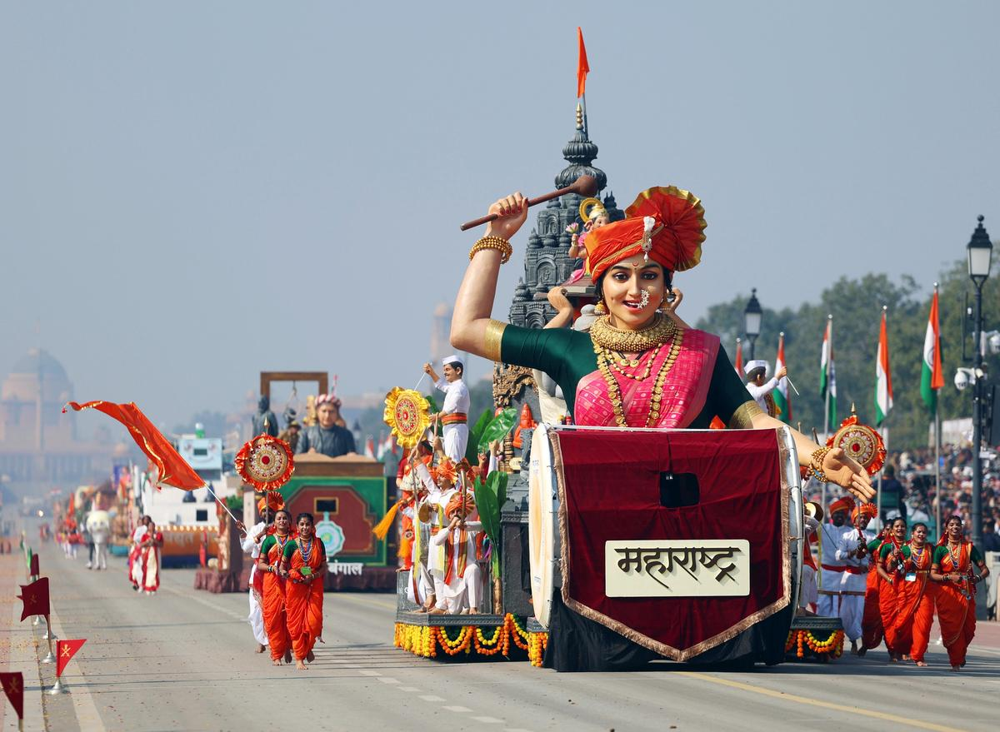
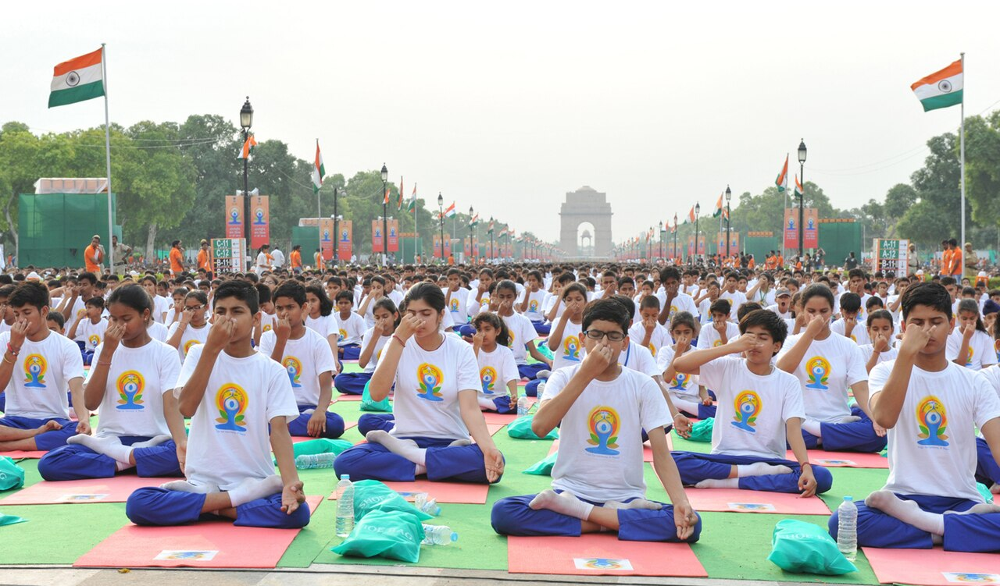

71st BPSC PYQOzone Day Date: "Ozone day is celebrated on:" — answer: 16 September (International Day for the Preservation of the Ozone Layer; marks the Montreal Protocol, 1987). The trap was 5 June (World Environment Day). BPSC tests exact dates, not "awareness".
70th BPSC PYQOlympic Day Theme: "What was the theme of the International Olympic Day 2024, celebrated every year on 23rd June?" — answer: "Let's Move and Celebrate". The trap was "Let's Move" (the 2023 theme). BPSC asks the year-specific theme — and 23 June marks the IOC's founding at the Sorbonne, Paris, in 1894.
💡 Deep-dive ready: Month-wise master calendar (Jan–Dec) of every fixed-date day BPSC has ever tested, who-sets-the-theme table, and first-observance years:
Year Calendar of Important Days — Master Statics →
A. The Big Two National Days — 2025 vs 2026 HIGH YIELD
Day
Date
2025
2026
Republic Day
26 Jan
76th RD; theme "Swarnim Bharat: Virasat aur Vikas"; chief guest Indonesian President Prabowo Subianto (4th Indonesian leader; 352-member Indonesian marching+band contingent — its first abroad); focus: 75 years of the Constitution
77th RD; chief guests Ursula von der Leyen (European Commission President) + António Costa (European Council President) — first joint dual-EU invitation; celebrations centred on "150 Years of Vande Mataram" ("Swatantrata ka Mantra: Vande Mataram" + "Samriddhi ka Mantra: Aatmanirbhar Bharat"); India–EU summit/FTA context
Independence Day
15 Aug
79th ID; theme "Naya Bharat" (Viksit Bharat @2047); PM Modi's 12th consecutive Red Fort speech — 103 minutes, the longest I-Day speech by any PM (surpassed Indira Gandhi's 11-in-a-row record)
Not in exam window (exam 26 Jul 2026 precedes 15 Aug 2026)

Maharashtra tableau ("Ganeshotsav — A Symbol of Aatmanirbharta") at the 77th Republic Day Parade, Kartavya Path, 26 January 2026 — the year both EU Presidents were chief guests. (Wikimedia Commons)
B. UN & International Days — 2025 vs 2026 Theme Bank VERIFIED 17 JUL 2026
Day
Date
2025 Theme / Host
2026 Theme / Host
World Environment Day
5 Jun
Host: Republic of Korea (Jeju); theme "Ending Global Plastic Pollution" (#BeatPlasticPollution)
11th IDY: "Yoga for One Earth, One Health"; PM-led main event Visakhapatnam
12th IDY: "Yoga for Healthy Ageing"; PM-led main event Kolkata, Red Road (Yoga Sangam + 12 heritage sites; WHO Decade of Healthy Ageing 2021-30)
National Science Day
28 Feb
"Empowering Indian Youth for Global Leadership in Science & Innovation for Viksit Bharat"
"Women in Science: Catalysing Viksit Bharat"
International Women's Day
8 Mar
UN theme: "For ALL Women and Girls: Rights. Equality. Empowerment."; campaign "Accelerate Action" (Beijing+30; WEF: parity only by 2158)
UN theme: "Rights. Justice. Action. For ALL Women and Girls"; campaign "Give To Gain"
World Water Day
22 Mar
"Glacier Preservation" (2025 = International Year of Glaciers' Preservation; first-ever World Glacier Day: 21 Mar 2025)
"Water and Gender" — slogan "Where Water Flows, Equality Grows"
World Health Day
7 Apr
"Healthy Beginnings, Hopeful Futures" (year-long maternal & newborn health campaign)
"Together for health. Stand with science." (One Health approach)
Earth Day
22 Apr
55th anniversary; theme "Our Power, Our Planet" — triple global renewable electricity by 2030
Same theme retained ("Our Power, Our Planet"; announced 14 Jan 2026)
National Voters' Day
25 Jan
15th NVD: "Nothing Like Voting, I Vote For Sure"; 75 years of ECI (est. 25 Jan 1950); electorate ~99.1 crore
16th NVD: "My India, My Vote"; tagline "Citizen at the Heart of Indian Democracy"; President Murmu graced the function
Human Rights Day
10 Dec
"Human Rights, Our Everyday Essentials" (77th anniversary of the UDHR, 1948)
—
Engineers' Day
15 Sep
58th ED: "Deep Tech & Engineering Excellence: Driving India's Techade" (IEI); Sir M. Visvesvaraya's birth anniversary
—
National Sports Day
29 Aug
120th birth anniversary of Major Dhyan Chand (b. 1905); observed since 2012
—
World Tourism Day
27 Sep
Host: Melaka, Malaysia; theme "Tourism and Sustainable Transformation" (with 7th World Tourism Conference)
Not announced as of 15 Jul 2026 — do not guess
United Nations Day
24 Oct
80th anniversary of the UN Charter (in force 24 Oct 1945); UN80 initiative; India's EAM at UN@80
—
Constitution Day
26 Nov
76th anniversary of adoption (26 Nov 1949); national function at Central Hall, Samvidhan Sadan; Constitution released in 9 languages; observed since 2015
—
Vijay Diwas
16 Dec
54th anniversary of the 1971 victory (13-day war; ~93,000 Pakistani troops surrendered — largest since WWII)
—

Mass yoga at Rajpath, New Delhi, on the first International Day of Yoga (21 June 2015). IDY was proclaimed by the UNGA in 2014 on India's proposal — 2025: Visakhapatnam; 2026: Kolkata. (Wikimedia Commons)
🧠 Mnemonic — Yoga Years "25-Vizag-Earth, 26-Kolkata-Ageing" 2022 Humanity → 2023 Vasudhaiva Kutumbakam → 2024 Self & Society → 2025 One Earth One Health (Vizag) → 2026 Healthy Ageing (Kolkata). Remember: Earth before Ageing — Vizag's beach before Kolkata's Red Road.
C. Fixed-Date Statics Bank — Days BPSC Tests Every Cycle MEMORISE COLD
Month
Fixed-Date Days (date — day — hook)
Jan
12 National Youth Day (Swami Vivekananda) • 15 Army Day • 23 Parakram Diwas (Netaji) • 25 National Voters' Day (ECI, 1950) • 26 Republic Day • 30 Martyrs' Day (Gandhi, 1948)
Feb
2 World Wetlands Day (Ramsar, 1971) • 4 World Cancer Day • 13 World Radio Day • 21 International Mother Language Day • 28 National Science Day (Raman Effect, 1928)
Mar
3 World Wildlife Day • 8 International Women's Day • 15 World Consumer Rights Day • 21 World Forestry Day • 22 World Water Day • 23 Shaheed Diwas (Bhagat Singh, 1931) • 24 World TB Day
Apr
7 World Health Day (WHO, 1948) • 14 Ambedkar Jayanti • 18 World Heritage Day • 21 Civil Services Day • 22 Earth Day (1970) • 23 World Book Day • 24 National Panchayati Raj Day (73rd Amendment)
May
1 International Labour Day • 3 World Press Freedom Day • 8 World Red Cross Day • 11 National Technology Day (Pokhran-II, 1998) • 22 Int'l Day for Biological Diversity • 25 World Football Day (new, 2024) • 30 Int'l Day of Potato (new, 2024) • 31 World No Tobacco Day
Jun
5 World Environment Day • 8 World Oceans Day • 12 World Day Against Child Labour • 14 World Blood Donor Day • 21 International Day of Yoga (UNGA, 2014) • 23 International Olympic Day (IOC, 1894) • 25 Samvidhan Hatya Diwas (Emergency, 1975) • 26 Int'l Day Against Drug Abuse
Jul
1 National Doctors' Day (Dr. B.C. Roy) • 11 World Population Day • 26 Kargil Vijay Diwas (1999) • 29 International Tiger Day
Aug
9 Nagasaki Day / Quit India Day (1942) • 12 International Youth Day • 15 Independence Day • 23 National Space Day (Chandrayaan-3 landing, 2023) • 29 National Sports Day (Dhyan Chand, 1905)
Sep
5 Teachers' Day (Dr. S. Radhakrishnan) • 8 International Literacy Day • 14 Hindi Diwas (1949) • 15 Engineers' Day (Visvesvaraya) + Int'l Day of Democracy • 16 World Ozone Day (Montreal Protocol, 1987) • 21 International Day of Peace • 27 World Tourism Day
Oct
2 Gandhi Jayanti + Int'l Day of Non-Violence • 8 Indian Air Force Day (1932) • 16 World Food Day (FAO, 1945) • 23 Int'l Snow Leopard Day (since 2024) • 24 United Nations Day (1945) • 31 National Unity Day (Sardar Patel; since 2014)
Nov
11 National Education Day (Maulana Azad) • 14 Children's Day (Nehru) + World Diabetes Day • 26 Constitution Day (adoption, 1949; since 2015) + National Milk Day (Dr. Kurien)
Dec
1 World AIDS Day • 2 National Pollution Control Day (Bhopal, 1984) • 3 Int'l Day of Persons with Disabilities • 4 Navy Day (Operation Trident, 1971) • 7 Armed Forces Flag Day • 10 Human Rights Day (UDHR, 1948) • 16 Vijay Diwas (1971) • 21 World Meditation Day (first, 2024) + World Basketball Day (2023) • 22 National Mathematics Day (Ramanujan) • 23 Kisan Diwas (Chaudhary Charan Singh) • 25 Good Governance Day (Atal Bihari Vajpayee)
🧠 Mnemonic — June Sandwich "E-O-Y-O-S-D" (5-8-21-23-25-26) Environment 5 → Oceans 8 → Yoga 21 → Olympic 23 → Samvidhan Hatya 25 → anti-Drugs 26. And the twin 21sts: Meditation (Dec) calms you before Yoga (Jun) stretches you — no wait, think calendar: Yoga 21 Jun, Meditation 21 Dec — six months apart, both India-piloted.
D. Newly Declared UN Observances (2023-25 Window) FRESH BAIT
World Meditation Day — 21 December: proclaimed by a UNGA resolution (December 2024; India among the co-sponsors); first observance 21 Dec 2024; second observance 21 Dec 2025 with a high-level event at UN HQ, New York. Complements IDY (21 June).
World Football Day — 25 May (first observed 2024; marks 100 years since football at the 1924 Paris Olympics).
International Day of Potato — 30 May (first observed 2024; FAO-led, Peru championed).
World Basketball Day — 21 December (first observed 2023; the sport's invention date, 1891).
International Snow Leopard Day — 23 October (UNGA-resolution observance since 2024; 2nd marking in Oct 2025; Kyrgyz-led).
First-ever World Glacier Day — 21 March 2025, inside the International Year of Glaciers' Preservation 2025 (pairs with World Water Day, 22 March).
National (not UN): Samvidhan Hatya Diwas — 25 June: notified by the Union Government (gazette, July 2024) to mark the 1975 Emergency; the 50th-anniversary commemoration ran 25 Jun 2024 → 25 Jun 2026 under the Ministry of Culture — squarely inside your exam window.
The Republic Day parade at Kartavya Path, New Delhi. Remember the ordinal arithmetic: 2026 − 1950 + 1 = 77th Republic Day; 2025 − 1947 + 1 = 79th Independence Day. (Wikimedia Commons)
🔶 Bihar Connection
🏛️ Bihar & Important Days — The Home-Ground Questions
Bihar Diwas — 22 March: Bihar's own statehood day. On 22 March 1912, Bihar was carved out of the Bengal Presidency as a separate province (with Patna as capital). The state has celebrated Bihar Diwas since 2010; the 2012 centenary year made it a permanent BPSC favourite — pair it with World Water Day, which falls on the same date.
Samvidhan Hatya Diwas (25 June) & Jayaprakash Narayan: the Emergency (25 Jun 1975) was resisted by the JP movement, born in Bihar — Lok Nayak Jayaprakash Narayan (from Sitab Diara, Saran district) gave the "Total Revolution" (Sampoorna Kranti) call at Patna's Gandhi Maidan in June 1974. The Union Government notified 25 June as Samvidhan Hatya Diwas (July 2024); the Emergency@50 commemoration (25 Jun 2024 → 25 Jun 2026) kept JP's Bihar legacy in national headlines through the exam window.
Yoga & Munger's Bihar School of Yoga: founded in 1963 by Swami Satyananda Saraswati, the Bihar School of Yoga (Munger) is one of the world's premier yoga institutions ("Satyananda Yoga" taught in 30+ countries) — Bihar's organic link every International Day of Yoga (21 June); Patna's Gandhi Maidan hosts the state's flagship mass-yoga event each year.
Vijay Diwas (16 Dec) & the Bihar Regiment: Danapur Cantonment (Patna) is among India's oldest cantonments and home to the Bihar Regimental Centre; units of the Bihar Regiment fought in the 1971 war commemorated on Vijay Diwas — and in Kargil (Kargil Vijay Diwas, 26 July, the exam date itself).
National Mathematics Day (22 Dec) & Aryabhata: the day marks Srinivasa Ramanujan's birth — but BPSC's Bihar angle is Aryabhata (b. 476 CE), who worked at Kusumapura (Pataliputra/Patna), with Nalanda as the ancient world's mathematics-astronomy hub. Expect a statement question pairing the day with Bihar's mathematical heritage.
National Voters' Day & the Bihar polls: Bihar voted for its 18th Assembly in two phases (6 & 11 November 2025); counting on 14 November 2025 returned the NDA with a landslide (~200 of 243 seats) — so ECI's voter-awareness calendar (NVD 2025 & 2026, SVEEP drives) was unusually visible in the state during the window.
🔗 Cross-Topic Connections
↔ Topic #9 (Awards & Honours): National Sports Day (29 Aug) is when the national sports awards (Major Dhyan Chand Khel Ratna, Arjuna, Dronacharya) are presented; Jnanpith announcements (59th: Vinod Kumar Shukla; 60th: R. Vairamuthu) feed the same culture-days cluster. ↔ Topic #10 (Sports): International Olympic Day (23 June) ties to the Olympic cycle and IOC news; National Sports Day → Dhyan Chand and Indian hockey history. ↔ Topic #13 (Books & Obituaries): "The Emergency Diaries" was released by HM Amit Shah on Samvidhan Hatya Diwas (25 Jun 2025); obituary-linked anniversaries (e.g., Vinod Kumar Shukla) keep day↔person mapping alive. ↔ Topic #14 (Environment in News): World Environment Day themes (Jeju 2025 → Baku 2026), the International Year of Glaciers' Preservation 2025, Ozone Day → Montreal Protocol, and Wetlands Day → Ramsar all double-count on both pages. ↔ Topic #3 (Intl Appointments & Orgs): UN@80 (24 Oct 2025) and the UN80 reform push; theme-issuing bodies — UNEP (WED), WHO (Health Day), UN-Water (Water Day), UNESCO (Literacy Day), FAO (Food Day). ↔ Topic #11 (Reports & Indices): IWD 2025's "parity by 2158" projection comes from the WEF Global Gender Gap Report — reports and days cross-examine each other.
📰 Current Relevance & Potential Traps (2025–26 Cycle)
Near-certain one-liner: Republic Day chief guests — 2025: Prabowo Subianto (Indonesia); 2026: Ursula von der Leyen + António Costa (first joint dual-EU guests). Trap pattern: offering the 2023 guest (el-Sisi) or swapping the years.
RD 2026 theme: celebrations centred on "150 Years of Vande Mataram" (sub-themes "Swatantrata ka Mantra: Vande Mataram" and "Samriddhi ka Mantra: Aatmanirbhar Bharat") — fresh content, first-time testable in BPSC 72.
Yoga year-swap: 2025 = "Yoga for One Earth, One Health" (Visakhapatnam) vs 2026 = "Yoga for Healthy Ageing" (Kolkata, Red Road). Ignore non-official sites citing "Yoga for Wellness, Wisdom & World Peace" — the Ministry of Ayush theme is the only valid one.
WED host chain: Saudi Arabia 2024 → Republic of Korea (Jeju) 2025 → Azerbaijan (Baku) 2026. Learn the 2026 theme as "Climate Action" (UNEP advisory wording; secondary sources vary on theme-vs-slogan phrasing — a question on the exact 2026 wording is unlikely).
Firsts to bank: first World Glacier Day (21 Mar 2025); first joint EU RD guests (2026); second World Meditation Day (21 Dec 2025, UN HQ); longest I-Day speech (103 min, 2025).
Retained theme alert: Earth Day kept "Our Power, Our Planet" for both 2025 and 2026 — an unusual repeat BPSC can exploit as "which theme was NOT changed in 2026".
Do-not-guess zone: World Tourism Day 2026 host/theme had not been announced as of 15 July 2026 — if an option claims one, it's a fabrication; the 2025 host (Melaka, Malaysia) is the safe fact.
✍️ MCQ Practice Set — 25 Questions (BPSC Level)
Q1. Ozone Day is celebrated on: (71st BPSC PYQ)
✅ Correct Answer: (B) — 16 September — the International Day for the Preservation of the Ozone Layer, marking the signing of the Montreal Protocol (16 September 1987). The 5 June trap (A) is World Environment Day; (C) 22 April is Earth Day; (D) 10 December is Human Rights Day.
Q2. What was the theme of the International Olympic Day 2024, celebrated every year on 23rd June? (70th BPSC PYQ)
✅ Correct Answer: (C) — The 2024 theme was “Let’s Move and Celebrate” (Paris Olympic year). (A) “Let’s Move” was the 2023 theme — the classic adjacent-year trap. Olympic Day marks the founding of the IOC at the Sorbonne, Paris, on 23 June 1894.
Q3. Match List-I (Day) with List-II (Date): a) National Science Day — 1) 21 June b) International Day of Yoga — 2) 28 February c) World Environment Day — 3) 5 June d) National Voters’ Day — 4) 25 January
✅ Correct Answer: (A) — NSD = 28 February (Raman Effect discovery, 1928); IDY = 21 June (summer solstice; UNGA resolution of 2014); WED = 5 June (Stockholm Conference, 1972); NVD = 25 January (ECI founded 25 Jan 1950). This day↔date matching bank is a BPSC staple.
Q4. Who was the chief guest at India’s 76th Republic Day celebrations in 2025?
✅ Correct Answer: (B) — Indonesian President Prabowo Subianto — the 4th Indonesian leader to be RD chief guest; a 352-member Indonesian marching and band contingent participated (its first abroad). Trap: el-Sisi was the 2023 guest; von der Leyen came in 2026 — don’t swap years.
Q5. The 77th Republic Day (26 January 2026) was historic because its chief guests were:
✅ Correct Answer: (C) — For the first time, both top EU leaders were joint chief guests — timed with the India–EU summit and FTA push. The 2026 celebrations centred on “150 Years of Vande Mataram” (“Swatantrata ka Mantra: Vande Mataram” / “Samriddhi ka Mantra: Aatmanirbhar Bharat”).
Q6. The theme of the 11th International Day of Yoga (2025) was:
✅ Correct Answer: (B) — 2025 = “Yoga for One Earth, One Health” (PM-led main event at Visakhapatnam). Traps: “Yoga for Humanity” = 2022; “Vasudhaiva Kutumbakam” = 2023; “Healthy Ageing” = 2026 — BPSC swaps adjacent years.
Q7. World Environment Day 2025 was hosted by ______ with the theme ______.
✅ Correct Answer: (A) — Jeju Province, Republic of Korea hosted WED 2025 with the #BeatPlasticPollution theme. (B) Baku hosts WED 2026; (C) Saudi Arabia hosted 2024; (D) Sweden’s “Only One Earth” was 2022.
Q8. The National Science Day 2026 theme was:
✅ Correct Answer: (C) — 2026 = “Women in Science: Catalysing Viksit Bharat”; (A) was the 2025 theme. NSD (28 February) marks C.V. Raman’s discovery of the Raman Effect (1928), which won him the 1930 Nobel Prize in Physics.
Q9. Consider the following statements about National Voters’ Day: 1. The 15th NVD (2025) had the theme “Nothing Like Voting, I Vote For Sure” and marked 75 years of the ECI. 2. NVD is celebrated on 25 January, the foundation day of the Election Commission of India (1950). 3. The 16th NVD (2026) theme was “My India, My Vote”. Which of the statements given above are correct?
✅ Correct Answer: (D) — All three are correct. ECI was established on 25 Jan 1950; India’s electorate stood at ~99.1 crore in 2025. The 2026 tagline was “Citizen at the Heart of Indian Democracy”, with President Murmu gracing the New Delhi function.
Q10. World Meditation Day, proclaimed by a UN General Assembly resolution piloted by India, is observed on:
✅ Correct Answer: (A) — 21 December — proclaimed by a UNGA resolution (December 2024) with India among the co-sponsors; first observance 21 Dec 2024, second on 21 Dec 2025 with a high-level event at UN HQ, New York. It complements the International Day of Yoga (21 June) — don’t swap the two 21sts.
Q11. The 12th International Day of Yoga (2026) had which theme and PM-led main venue?
✅ Correct Answer: (C) — 2026: theme “Yoga for Healthy Ageing” (aligns with the WHO Decade of Healthy Ageing 2021–30), PM-led main event at Red Road, Kolkata, with Yoga Sangam and 12 heritage sites. (A) is 2025; Mysuru hosted the 2022 national event; (D) is a fake theme circulated by non-official sites — the Ministry of Ayush theme is the only one that counts.
Q12. World Water Day 2025 (22 March) was special because:
✅ Correct Answer: (A) — 2025 = “Glacier Preservation” during the International Year of Glaciers’ Preservation; 21 March 2025 saw the first-ever World Glacier Day. (B) is the 2026 theme (slogan “Where Water Flows, Equality Grows”); (D) was 2024.
Q13. The World Health Day 2025 theme was:
✅ Correct Answer: (C) — 2025 = “Healthy Beginnings, Hopeful Futures” — a year-long maternal and newborn health campaign by WHO. (A) was 2024; (D) is the 2026 theme (One Health approach, rebuilding trust in science). WHD on 7 April marks WHO’s constitution coming into force (1948).
Q14. Consider the following statements about Independence Day 2025: 1. It was the 79th Independence Day. 2. The theme was “Naya Bharat”. 3. PM Modi’s 103-minute address was his 12th consecutive Red Fort speech — the longest I-Day speech by any PM. Which of the statements given above are correct?
✅ Correct Answer: (D) — All correct — 15 Aug 2025 = 79th ID; theme “Naya Bharat” (Viksit Bharat @2047 vision); the 103-minute speech surpassed Indira Gandhi’s benchmark of 11 consecutive addresses. The 2026 theme is not testable — the exam (26 Jul 2026) precedes 15 Aug 2026.
Q15. United Nations Day 2025 (24 October) was special as it marked:
✅ Correct Answer: (B) — The UN Charter entered into force on 24 Oct 1945 → UN@80 in 2025, accompanied by the UN80 reform initiative; India’s EAM delivered remarks at UN@80 celebrations. (A) 75 years was 2020; (D) Bandung (1955) turned 70 in 2025 but is unrelated to UN Day.
Q16. Earth Day (22 April) in 2025 and 2026 shared which theme?
✅ Correct Answer: (C) — EARTHDAY.ORG retained “Our Power, Our Planet” for both 2025 (the 55th anniversary — a call to triple global renewable electricity by 2030) and 2026 (announced 14 Jan 2026). (A) 2023, (B) 2024, (D) 2021. Theme repetition across two years is rare — exactly why it is testable.
Q17. For International Women’s Day 2026, the UN theme and the IWD campaign theme were respectively:
✅ Correct Answer: (B) — 2026: UN theme “Rights. Justice. Action. For ALL Women and Girls”; IWD campaign theme “Give To Gain”. (A) is the 2025 pair — the Beijing+30 year, when WEF projected gender parity only by 2158 at the current pace.
Q18. Engineers’ Day 2025 (15 September) had which theme?
✅ Correct Answer: (A) — The 58th Engineers’ Day (Institution of Engineers) theme was “Deep Tech & Engineering Excellence: Driving India’s Techade”. 15 September is Sir M. Visvesvaraya’s birth anniversary (b. 1861; Bharat Ratna 1955) — the designer of the Krishna Raja Sagara dam.
Q19. Vijay Diwas 2025 (16 December) marked:
✅ Correct Answer: (B) — 16 Dec 1971: Pakistan’s Eastern Command surrendered ~93,000 troops at Dhaka — the largest military surrender since WWII — ending the 13-day war and leading to the birth of Bangladesh. Trap: Kargil Vijay Diwas is 26 July; Goa Liberation Day is 19 December.
Q20. Consider the following statements about Constitution Day (Samvidhan Divas): 1. It is observed on 26 November, marking the Constitution’s adoption in 1949. 2. It has been officially observed since 2015. 3. The 2025 national function was held at the Central Hall of Samvidhan Sadan, and the Constitution was released in 9 languages. Which of the statements given above are correct?
✅ Correct Answer: (D) — All correct. 26 Nov 1949 = adoption (76th anniversary in 2025); enforcement came on 26 Jan 1950 = Republic Day — the adoption-vs-enforcement swap is BPSC’s favourite trap here. The day was instituted in 2015, Dr. Ambedkar’s 125th birth anniversary year.
Q21. Consider the following pairs: 1. International Day of Yoga 2025 — “Yoga for Healthy Ageing” 2. World Environment Day 2025 — Host: Jeju, Republic of Korea 3. National Voters’ Day 2026 — “My India, My Vote” Which of the above pairs is/are correctly matched?
✅ Correct Answer: (B) — Pair 1 is the year-swap trap: “Yoga for Healthy Ageing” is the 2026 theme; 2025 was “Yoga for One Earth, One Health”. Pairs 2 and 3 are correct. BPSC routinely plants one adjacent-year swap in such sets.
Q22. Match List-I (New UN observance) with List-II (Date): a) World Football Day — 1) 21 December b) International Day of Potato — 2) 25 May c) World Basketball Day — 3) 30 May d) International Snow Leopard Day — 4) 23 October
✅ Correct Answer: (C) — Football = 25 May (first 2024); Potato = 30 May (first 2024); Basketball = 21 December (first 2023 — shares its date with World Meditation Day); Snow Leopard = 23 October (observed since 2024). The two 21-December days are the designed confusion.
Q23. Which of the following day↔date pairs is INCORRECT?
✅ Correct Answer: (D) — Ozone Day is 16 SEPTEMBER (Montreal Protocol, 1987) — 16 October is World Food Day (FAO founded 1945). Sports Day (29 Aug) marks Major Dhyan Chand’s birth (1905; 120th anniversary in 2025); Kisan Diwas (23 Dec) marks Chaudhary Charan Singh’s birth anniversary.
Q24. World Tourism Day 2025 was hosted by:
✅ Correct Answer: (B) — Melaka, Malaysia hosted WTD 2025 (“Tourism and Sustainable Transformation”) alongside the 7th World Tourism Conference. As of 15 July 2026, the 2026 host and theme had not been announced — never guess unannounced hosts in the exam.
Q25. Consider the following anniversary statements: 1. 26 January 2026 = 77th Republic Day. 2. 15 August 2025 = 79th Independence Day. 3. 24 October 2025 = 80th United Nations Day. Which of the above are correct?
✅ Correct Answer: (D) — All three are correct — count from the first observance: RD from 1950 (2026−1950+1 = 77th); ID from 1947 (2025−1947+1 = 79th); UN Day from 1945 (2025−1945 = 80th). BPSC loves off-by-one ordinal traps such as “78th Republic Day”.